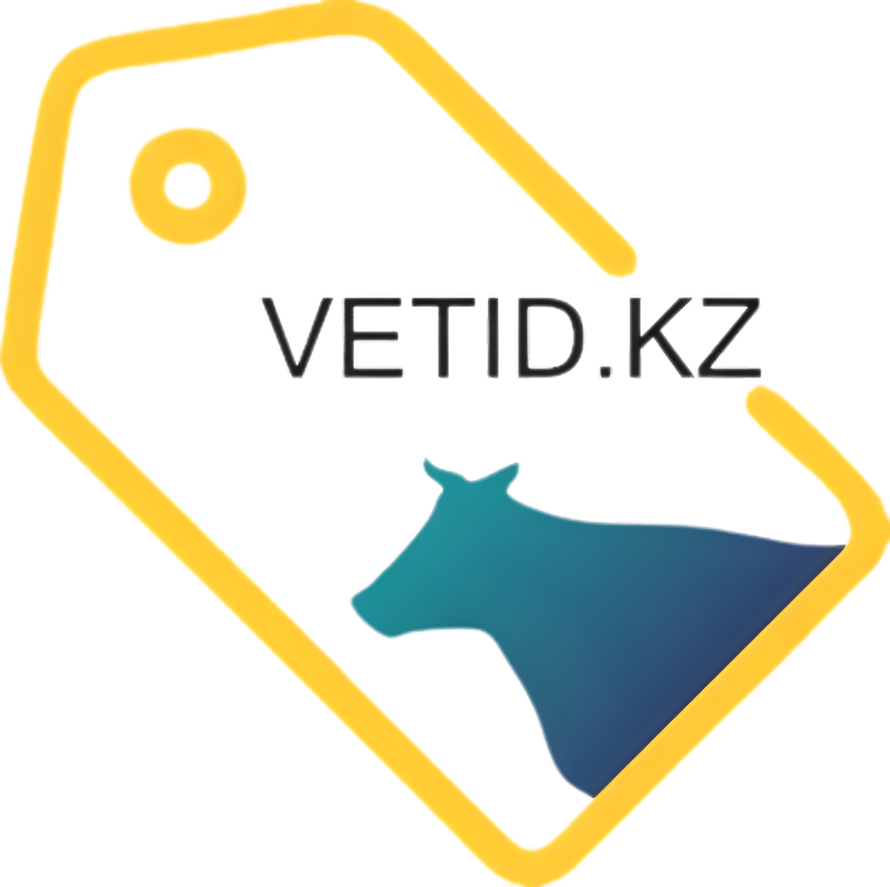

Информационная система «Процессинговый центр»
Предназначена для подачи электронной заявки на генерацию эмиссионных индивидуальных номеров сельскохозяйственных животных, включающая сведения о зарегистрированных лазерных станциях, изделиях (средствах) и атрибутах для проведения идентификации сельскохозяйственных животных и их производителях, осуществляемая государственными ветеринарными организациями, созданными местными исполнительными органами, и используемая уполномоченным органом в области ветеринарии.
В ИС «Процессинговый центр» предусмотрен функционал по:
- - генерации номеров и оформление заявок для частного заказа (за счет владельца);
- - генерации номеров и оформление заявок для государственного заказа (за счет МИО);
- - отчетным данным (статистика использованных и не использованных средств идентификации);
- - входу через личный кабинет ветеринарного врача;
- - входу через личный кабинет поставщика средств идентификации;
- - входу через личный кабинет сотрудника процессингового центра РПО;
- - входу через личный кабинет сотрудника уполномоченного органа
Нормативные правовые акты:
- Закон Республики Казахстан «О ветеринарии» от 10 июля 2002 года N 339 https://adilet.zan.kz/rus/docs/Z020000339_
- Правила функционирования процессингового центра, утвержденного приказом и.о. Министра сельского хозяйства Республики Казахстан от 27 февраля 2015 года № 7-1/179 https://adilet.zan.kz/rus/docs/V1500010749
- Правила регистрации лазерных станций, изделий (средств) и атрибутов для проведения идентификации сельскохозяйственных животных и производителей, утвержденных приказом Министра сельского хозяйства Республики Казахстан от 21 июля 2015 года № 7-1/678 https://adilet.zan.kz/rus/docs/V1500011926